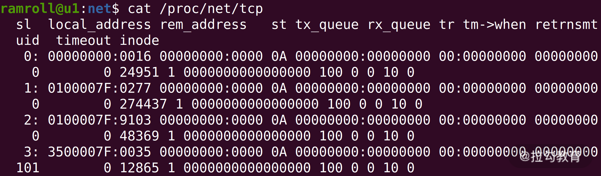
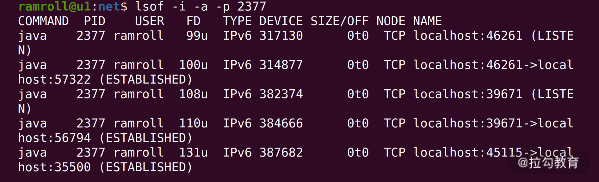
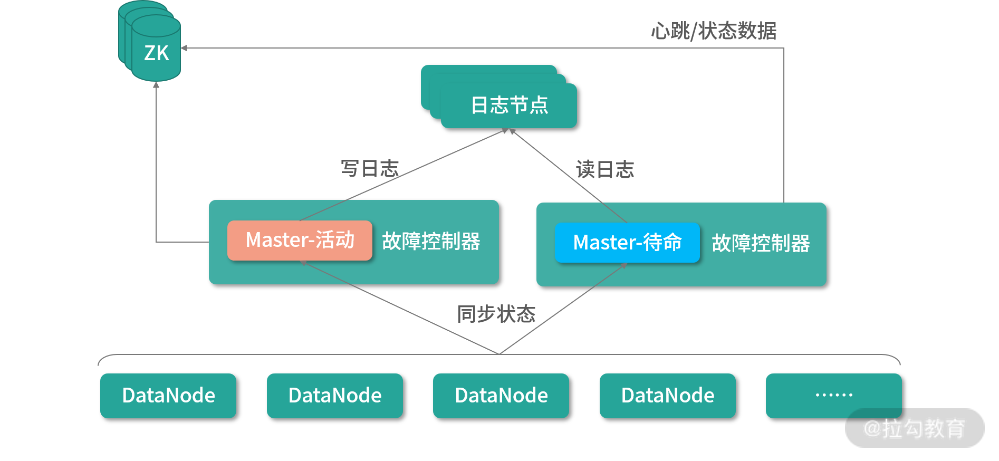

- 00 开篇词 为什么大厂面试必考操作系统？.md.html
- 00 课前必读 构建知识体系，可以这样做！.md.html
- 01 计算机是什么：“如何把程序写好”这个问题是可计算的吗？.md.html
- 02 程序的执行：相比 32 位，64 位的优势是什么？（上）.md.html
- 03 程序的执行：相比 32 位，64 位的优势是什么？（下）.md.html
- 04 构造复杂的程序：将一个递归函数转成非递归函数的通用方法.md.html
- 05 存储器分级：L1 Cache 比内存和 SSD 快多少倍？.md.html
- 05 (1) 加餐 练习题详解（一）.md.html
- 06 目录结构和文件管理指令：rm -rf 指令的作用是？.md.html
- 07 进程、重定向和管道指令：xargs 指令的作用是？.md.html
- 08 用户和权限管理指令： 请简述 Linux 权限划分的原则？.md.html
- 09 Linux 中的网络指令：如何查看一个域名有哪些 NS 记录？.md.html
- 10 软件的安装： 编译安装和包管理器安装有什么优势和劣势？.md.html
- 11 高级技巧之日志分析：利用 Linux 指令分析 Web 日志.md.html
- 12 高级技巧之集群部署：利用 Linux 指令同时在多台机器部署程序.md.html
- 12 (1)加餐 练习题详解（二）.md.html
- 13 操作系统内核：Linux 内核和 Windows 内核有什么区别？.md.html
- 14 用户态和内核态：用户态线程和内核态线程有什么区别？.md.html
- 15 中断和中断向量：Javajs 等语言为什么可以捕获到键盘输入？.md.html
- 16 WinMacUnixLinux 的区别和联系：为什么 Debian 漏洞排名第一还这么多人用？.md.html
- 16 (1)加餐 练习题详解（三）.md.html
- 17 进程和线程：进程的开销比线程大在了哪里？.md.html
- 18 锁、信号量和分布式锁：如何控制同一时间只有 2 个线程运行？.md.html
- 19 乐观锁、区块链：除了上锁还有哪些并发控制方法？.md.html
- 20 线程的调度：线程调度都有哪些方法？.md.html
- 21 哲学家就餐问题：什么情况下会触发饥饿和死锁？.md.html
- 22 进程间通信： 进程间通信都有哪些方法？.md.html
- 23 分析服务的特性：我的服务应该开多少个进程、多少个线程？.md.html
- 23 (1)加餐 练习题详解（四）.md.html
- 24 虚拟内存 ：一个程序最多能使用多少内存？.md.html
- 25 内存管理单元： 什么情况下使用大内存分页？.md.html
- 26 缓存置换算法： LRU 用什么数据结构实现更合理？.md.html
- 27 内存回收上篇：如何解决内存的循环引用问题？.md.html
- 28 内存回收下篇：三色标记-清除算法是怎么回事？.md.html
- 28 (1)加餐 练习题详解（五）.md.html
- 29 Linux 下的各个目录有什么作用？.md.html
- 30 文件系统的底层实现：FAT、NTFS 和 Ext3 有什么区别？.md.html
- 31 数据库文件系统实例：MySQL 中 B 树和 B+ 树有什么区别？.md.html
- 32 HDFS 介绍：分布式文件系统是怎么回事？.md.html
- 32 (1)加餐 练习题详解（六）.md.html
- 33 互联网协议群（TCPIP）：多路复用是怎么回事？.md.html
- 34 UDP 协议：UDP 和 TCP 相比快在哪里？.md.html
- 35 Linux 的 IO 模式：selectpollepoll 有什么区别？.md.html
- 36 公私钥体系和网络安全：什么是中间人攻击？.md.html
- 36 (1)加餐 练习题详解（七）.md.html
- 37 虚拟化技术介绍：VMware 和 Docker 的区别？.md.html
- 38 容器编排技术：如何利用 K8s 和 Docker Swarm 管理微服务？.md.html
- 39 Linux 架构优秀在哪里.md.html
- 40 商业操作系统：电商操作系统是不是一个噱头？.md.html
- 40 (1)加餐 练习题详解（八）.md.html
- 41 结束语 论程序员的发展——信仰、选择和博弈.md.html
- 捐赠
32 (1)加餐 练习题详解（六）
今天我会带你把《模块六：文件系统》中涉及的课后练习题，逐一讲解，并给出每个课时练习题的解题思路和答案。
练习题详解
29 | Linux下各个目录有什么作用？
【问题】socket 文件都存在哪里？
【解析】socket 没有实体文件，只有 inode，所以 socket 是没有名字的文件。
你可以在 /proc/net/tcp 目录下找到所有的 TCP 连接，在 /proc/[pid]/fd 下也可以找到这些 socket 文件，都是数字代号，数字就是 socket 文件的 fd，如下图所示：

你也可以用lsof -i -a -p [pid查找某个进程的 socket 使用情况。下面结果和你用ls /proc/[pid]/fd看到的 fd 是一致的，如下图所示：

30 | 文件系统的底层实现：FAT、NTFS 和 Ext3 有什么区别？
【问题】思考日志文件系统的数据冗余如何处理？
【解析】日志系统产生冗余几乎是必然发生的。 只要发生了修改、删除，肯定就会有数据冗余。日志系统通常不会主动压缩，但是日志文件系统通常会对磁盘碎片进行整理，这种机制和内存的管理非常相似。
首先我们把这个磁盘切割成很多等大的小块，大文件可能需要分配多个小块，多个小文件共用一个小块。而当很多文件被删除之后，磁盘中的小块会产生碎片，文件系统会进行碎片整理，比如把多个有很多碎片的区域拷贝到一起，使存储空间更加紧凑。
回到正题，最终的答案就是不压缩、不处理冗余，空间换时间，提升写入速度。
31 | 数据库文件系统实例：MySQL 中 B 树和 B+ 树有什么区别？
【问题】按照应该尽量减少磁盘读写操作的原则，是不是哈希表的索引更有优势？
【解析】哈希表是一种稀疏的离散结构，通常使用键查找值。给定一个键，哈希表会通过数学计算的方式找到值的内存地址。因此，从这个角度去分析，哈希表的查询速度非常快。单独查找某一个数据速度超过了 B+ 树（比如根据姓名查找用户）。因此，包括 MySQL 在内的很多数据库，在支持 B+ 树索引的同时，也支持哈希表索引。
这两种索引最大的区别是：B+ 树是对范围的划分，其中的数据还保持着连续性；而哈希表是一种离散的查询结构，数据已经分散到不同的空间中去了。所以当数据要进行范围查找时，比如查找某个区间内的订单，或者进行聚合运算，这个时候哈希表的性能就非常低了。
哈希表有一个设计约束，如果我们用了 m 个桶（Bucket，比如链表）去存储哈希表中的数据，再假设总共需要存储 N 个数据。那么平均查询次数 k = N/m。为了让 k 不会太大，当数据增长到一定规模时，哈希表需要增加桶的数目，这个时候就需要重新计算所有节点的哈希值（重新分配所有节点属于哪个桶）。
综上，对于大部分的操作 B+ 树都有较好的性能，比如说 >,<, =,BETWEEN，LIKE 等，哈希表只能用于等于的情况。
32 | HDFS 介绍：分布式文件系统是怎么回事？
【问题】Master 节点如果宕机了，影响有多大，如何恢复？
【解析】在早期的设计中，Master 是一个单点（Single Point），如果发生故障，系统就会停止运转，这就是所谓的单点故障（Single Point of Failure）。由此带来的后果会非常严重。发生故障后，虽然我们可以设置第二节点不断备份还原点，通过还原点加快系统恢复的速度，但是在数据的恢复期间，整个系统是不可用的。
在一个高可用的设计当中，我们不希望发生任何的单点故障（SPoF），因此所有的节点都至少有两份。于是在 Hadoop 后来的设计当中，增加了一种主从结构。
 如上图所示，我们同时维护两个 Master 节点（在 Hadoop 中称为 NameNode，NN）——一个活动（Active）的 NN 节点，一个待命（StandBy）的 NN 节点。
为了保证在系统出现故障的时候，可以迅速切换节点，我们需要一个故障控制单元。因为是分布式的设计，控制单元在每个 NN 中都必须有一个，这个单元可以考虑 NN 节点进程中的一个线程。控制单元不断地检测节点的状态，并且不断探测其他 NN 节点的状态。一旦检测到故障，控制单元随时准备切换节点。
一方面，因为我们不能信任任何的 NN 节点不出现故障，所以不能将节点的状态存在任何一个 NN 节点中。并且节点的状态也不适合存在数据节点中，因为大数据集群的数据节点实时性不够，它是用来存储大文件的。因此，可以考虑将节点的状态放入一个第三方的存储当中，通常就是 ZooKeeper。
另一方面，因为活动 NN 节点和待命 NN 节点数据需要完全一致，所以数据节点也会把自己的状态同时发送给活动节点和待命节点（比如命名空间变动等）。最后客户端会把请求发送给活动节点，因此活动节点会产生操作日志。不可以把活动节点的操作日志直接发送给待命节点，是因为我们不确定待命节点是否可用。
而且，为了保证日志数据不丢失，它们应该存储至少 3 份。即使其中一份数据发生损坏，也可以通过对比半数以上的节点（2 个）恢复数据。因此，这里需要设计专门的日志节点（Journal Node）存储日志。至少需要 3 个日志节点，而且必须是奇数。活动节点将自己的日志发送给日志节点，待命节点则从日志节点中读取日志，同步自己的状态。
我们再来回顾一下这个高可用的设计。为了保证可用性，我们增加了备用节点待命，随时替代活动节点。为了达成这个目标。有 3 类数据需要同步。
- 数据节点同步给主节点的日志。这类数据由数据节点同时同步给活动、待命节点。
- 活动节点同步给待命节点的操作记录。这类数据由活动节点同步给日志节点，再由日志节点同步给待命节点。日志又至少有 3 态机器的集群保管，每个上放一个日志节点。
- 记录节点本身状态的数据（比如节点有没有心跳）。这类数据存储在分布式应用协作引擎上，比如 ZooKeeper。
有了这样的设计，当活动节点发生故障的时候，只需要迅速切换节点即可修复故障。
总结
这个模块我们对文件系统进行了系统的学习，下面我来总结一下文件系统的几块核心要点。
- 理解虚拟文件系统的设计，理解在一个目录树结构当中，可以拥有不同的文件系统——一切皆文件的设计。基于这种结构，设备、磁盘、分布式文件系、网络请求都可以是文件。
- 将空间分块管理是一种高效的常规手段。方便分配、方便回收、方便整理——除了文件系统，内存管理和分布式文件系统也会用到这种手段。
- 日志文件系统的设计是重中之重，日志文件系统通过空间换时间，牺牲少量的读取性能，提升整体的写入效率。除了单机文件系统，这种设计在分布式文件系统和很多数据库当中也都存在。
- 分层架构：将数据库系统、分布式文件系搭建在单机文件管理之上——知识是死的、思路是活的。希望你能将这部分知识运用到日常开发中，提升自己系统的性能。
© 2019 - 2023 Liangliang Lee. Powered by gin and hexo-theme-book.